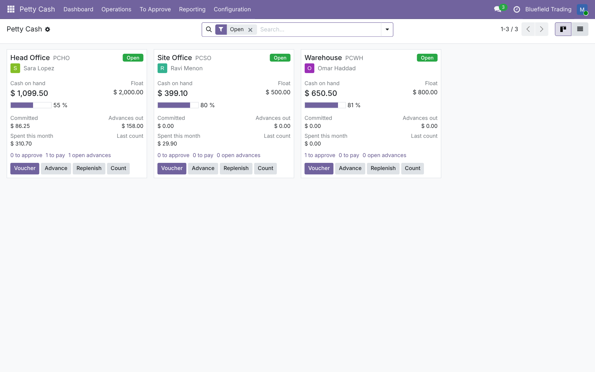
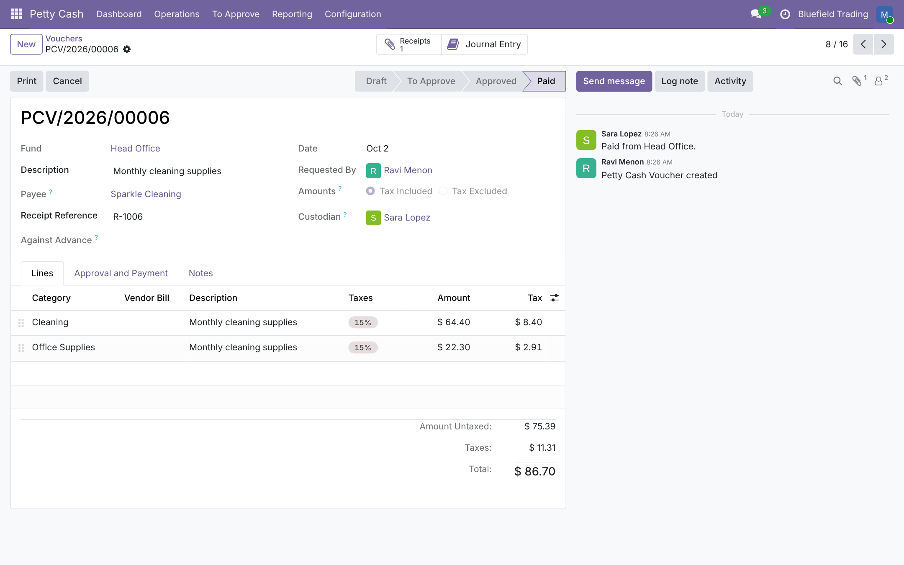
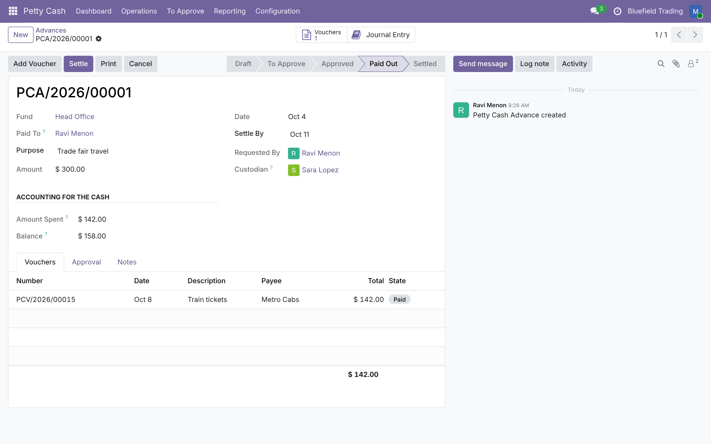
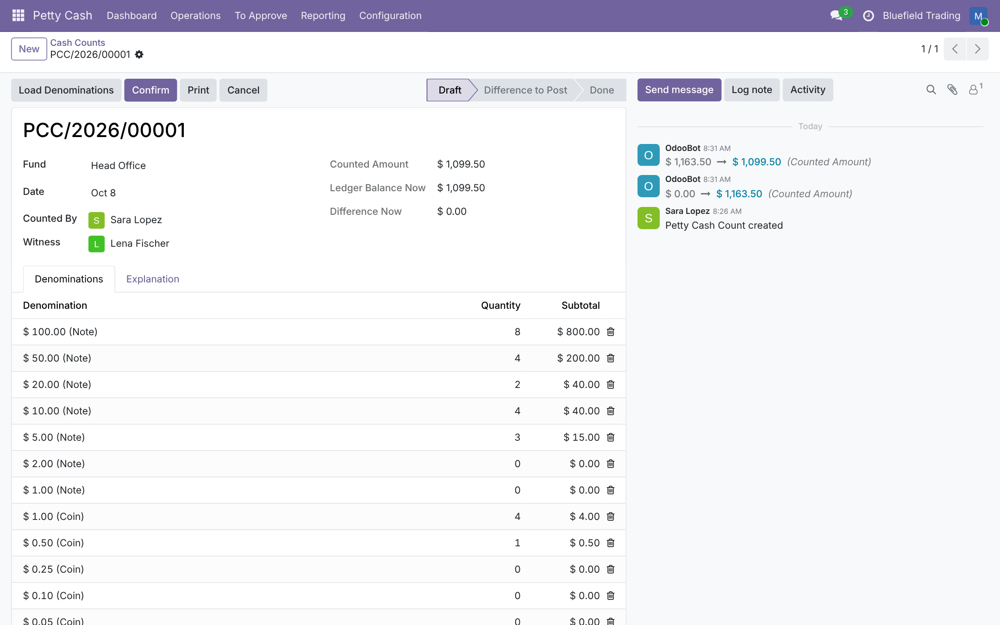
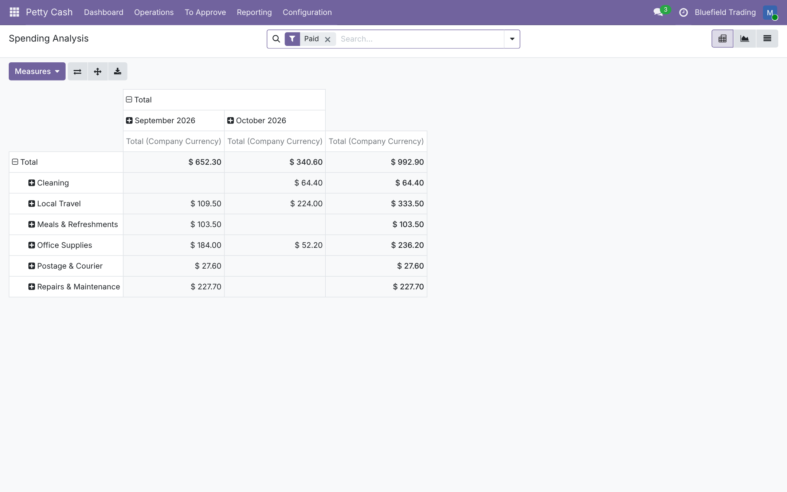
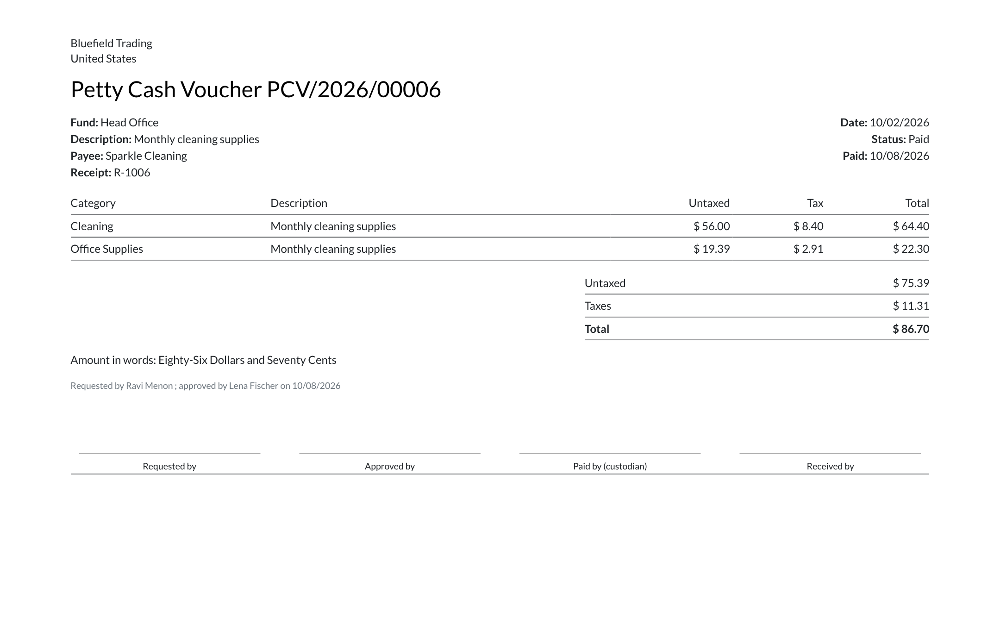
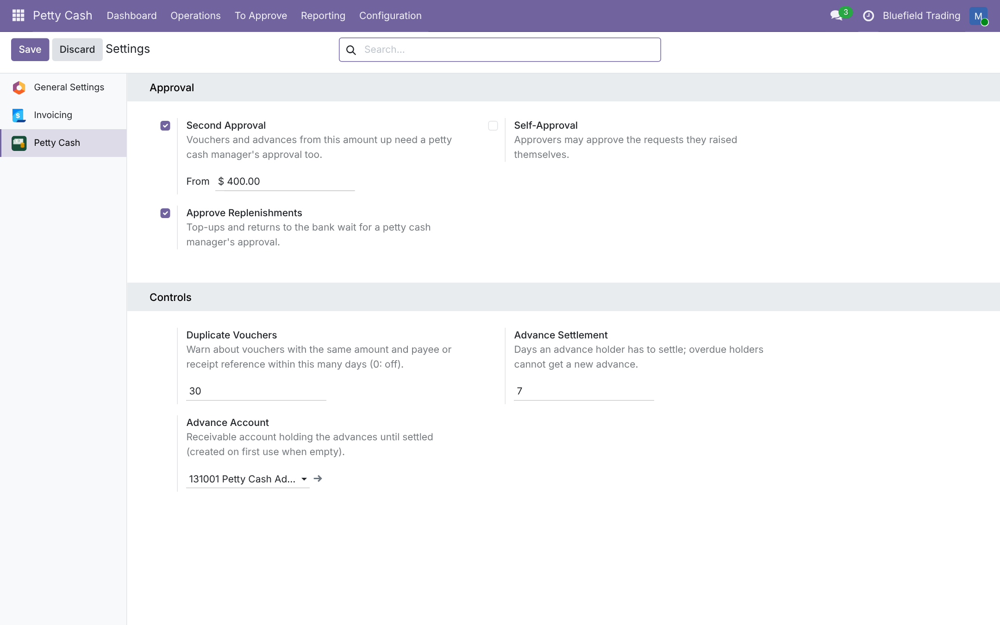

Imprest funds, vouchers, approvals, cash advances, replenishment and cash counts - every balance read from the general ledger.
A fund is a cash journal with its own cash account. Its balance is not a running total kept by the module: it is the balance of the posted journal items on that account. Whatever posts there - vouchers, top-ups, a manual entry by your accountant - the fund shows it, and it can never drift from the general ledger.
Shop receipts carry tax-included totals. Enter them as they are: the tax is extracted by Odoo's own tax engine (the same computation as Odoo Expenses), with global or per-line rounding, and the voucher total is exactly what leaves the cash box, cent for cent.
Requesters and custodians work with petty cash rights only. The module checks who may approve and pay, then posts the entries itself; accountants see clean, numbered entries in the fund journal.
One card per fund: cash on hand against the float, committed amounts, advances out, spending this month, last count, and the queues to approve and to pay. Quick buttons raise a voucher, an advance, a replenishment or a cash count.


Hand out cash before the spending. The advance moves the cash to an advance account in the holder's name; the holder's vouchers are booked against it; the settlement returns the unspent cash to the fund (or reimburses the overspending) and reconciles the advance account. Settlement dates, overdue reminders, and no new advance while one is overdue.

A top-up brings the fund back to its float and lists the vouchers it covers, with a claim totalled by category. The counterpart is the bank journal's outstanding payments account, so the bank statement line reconciles like a payment. Returns to the bank reduce the float or close the fund. A reminder when the balance falls below the threshold, and optional automatic drafting of the request.
Count the box note by note (denominations for USD, EUR, GBP, INR, AED and SAR included, add your own) or as one amount, with a witness. The ledger balance at the count date is frozen next to the count; a difference must be explained and is posted as cash over or short by a manager. Periodic count reminders. Transfers move cash between funds of the same currency.

Spending analysis by category, fund, payee and month (pivot, graph, list); the fund statement with opening balance, every movement and a running balance; printable vouchers with amount in words and signature boxes, advance slips, replenishment claims and count sheets.



account) only.